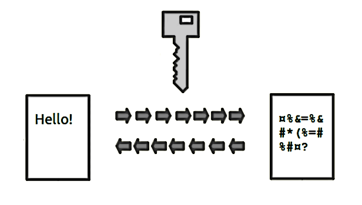

Yang Zhou
yz12a17@soton.ac.uk
Encryption
Hash Function
source: https://commons.wikimedia.org/wiki/File:Public_key_encryption_keys.png
Data Security
Massage Verification
Symmetric-key Algorithma
Public-key Cryptography
Symmetric-key Algorithma
source: https://commons.wikimedia.org/wiki/File:Public_key_encryption_keys.png
Public-key Cryptography
source: https://commons.wikimedia.org/wiki/File:Public_key_encryption_keys.png
Public key encryption
https://zh.wikipedia.org/wiki/File:Asymmetric_encryption_(colored).png
Digital signatures
https://zh.wikipedia.org/wiki/File:Asymmetric_encryption_(colored).png
[1] R.L. Rivest, A. Shamir, L. Adleman. A Method for Obtaining Digital Signatures and Public Key Cryptosystems, Communications of the ACM, 1978.
[2] Robert Richardson, 2008 CSI Computer Crime and Security Survey at 19.i.cmpnet.com.
[3] Stallings, William (1990-05-03). Cryptography and Network Security: Principles and Practice. Prentice Hall. p. 165. ISBN 9780138690175.